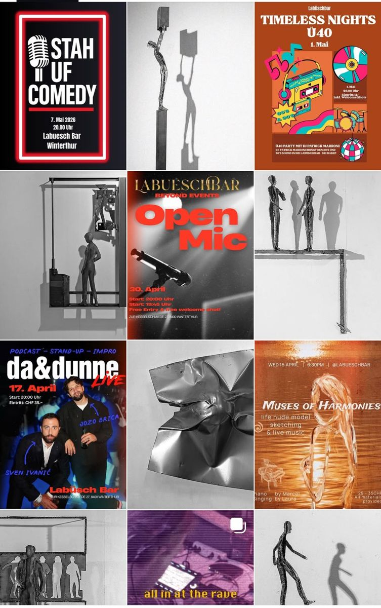
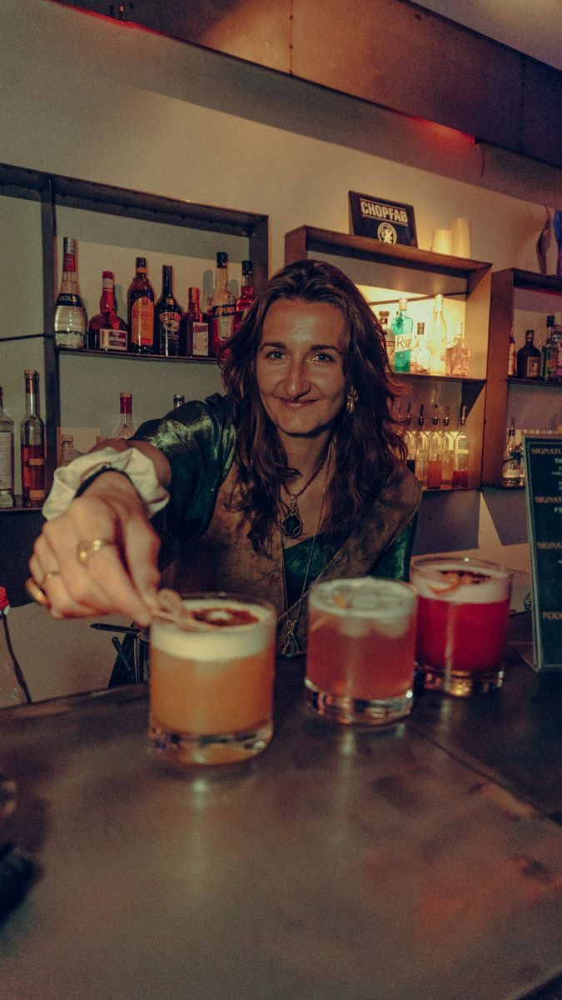
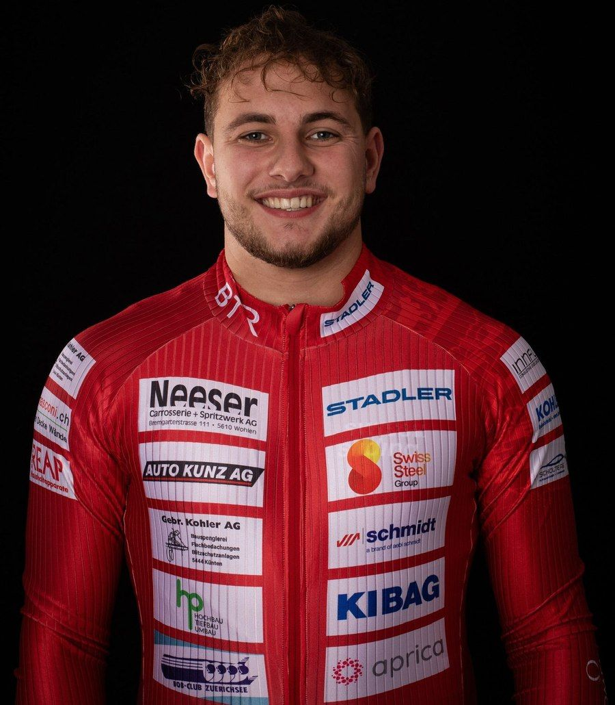
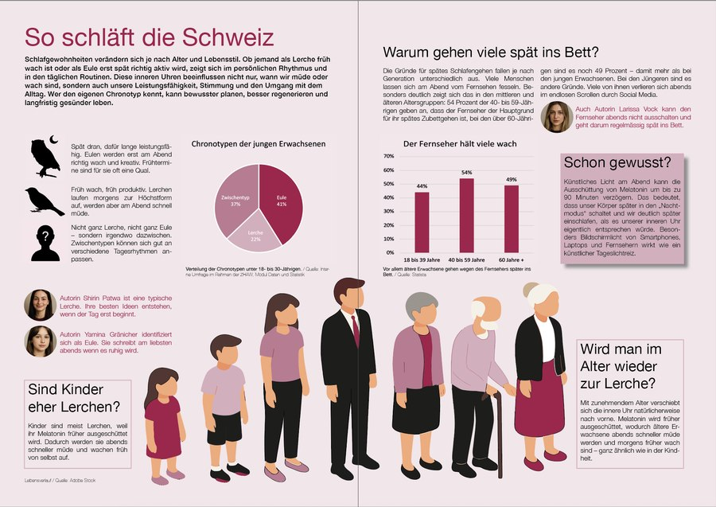
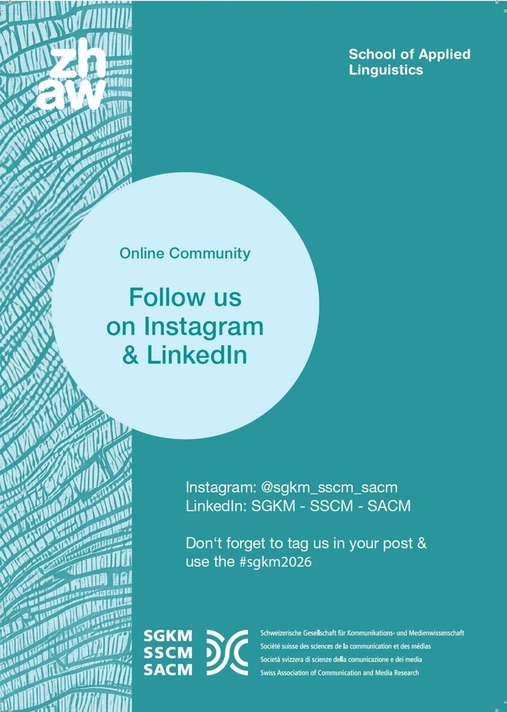

Hier findest du eine Auswahl an Projekten, die im Laufe meines Studiums Kommunikation & Medien entstanden sind. Aber auch private Projekte, die mir am Herzen liegen. Schau dich gerne um.

SOCIAL MEDIAInstagram-Kanal und Flyer für die Labüsch Bar in Winterthur, mit Fokus auf die Events und die Kunst, die die Bar besonders macht.
Projekt ansehen →
VIDEOVideoporträt über die Geschäftsleiterin der Labüsch Bar, die ihre Leidenschaft im Berufsalltag lebt.
Projekt ansehen →
AUDIOInterview mit einer spannenden Persönlichkeit aus meinem Umfeld, aufbereitet als journalistischer Radiobeitrag.
Projekt ansehen →
PRINT & DESIGNFiktive Doppelseite in InDesign, mit eigener Datenvisualisierung zu vorgegebenen Daten.
Projekt ansehen →
PRINT & DESIGNFlyer für die SGKM-Tagung 2026, der die Teilnehmenden beim Onboarding auf die Social-Media-Kanäle der Tagung aufmerksam machte.
Projekt ansehen →